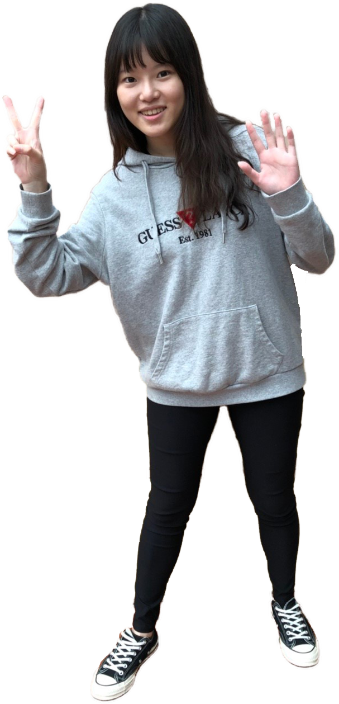
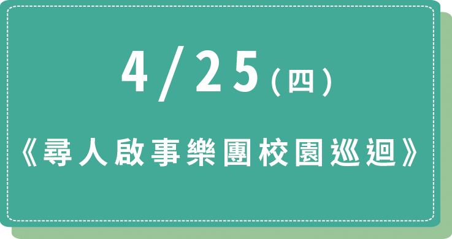
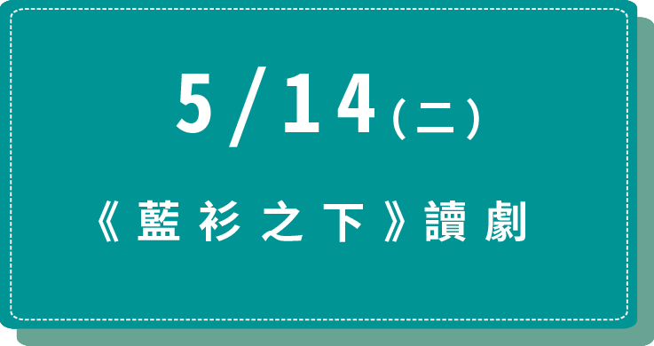
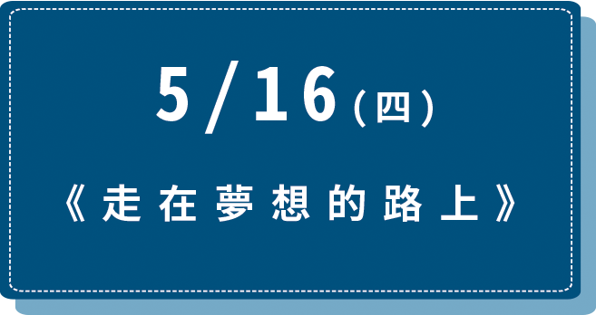

「
107-1風雅頌藝文廳活動節目演出時間：週三 | 12:50-14:00 週四 | 15:50-17:00
演出地點：中原大學真知教學大樓2樓
」
4/3
《三個巴赫》林暉鈞 阮馨儀 徐嘉琪

三重奏(小提琴、長笛、鋼琴)
4/10 散場後的旋律許淑婷 呂超倫 盧奕蓁三重奏(小提琴、大提琴、鋼琴)
4/11 春之樂享駱慧珠 盧書音 艾德瓦多·藍札 李宛庭重唱
4/24 變換樂端孫慧學 陳怡真 歐易欣 盧奕蓁四重奏(長笛、單簧管、低音管、鋼琴)
4/25 鋼琴三重奏的春季狂想陳奕安 郭心蘋 易繼心 袁長穗鋼琴三重奏及男高音
5/1
葉賀璞 三重奏Hope Yeh Trio葉賀璞 林偉中 藤井俊充
吉他、鼓組、貝斯
5/2 Classical X Tap蕭昀莉 陳品卉 王守芳 陳思宇 陳宜彣 黃宇清木管五重奏與踢踏舞
5/4 台北青年管樂團室內樂集蕭陽德 謝介豪 林子洋 黃騰寬鋼琴四重奏(小提琴、單簧管、上低音號、鋼琴)
5/9 德奧經典：曼哈頓室內樂集簡山根 潘世衡 潘世洵 陳佑瑄 張竹君 何宛茹室內樂(小、中、大提琴、鋼琴)
5/15 黃瑞豐 D.O.G.S 電風琴四重奏黃瑞豐 曾增譯 關家傑 楊曉恩爵士四重奏
5/16 長笛與鋼琴的對話陳怡婷 陳冠宇二重奏(長笛、鋼琴)
5/22 Alors On Chante!李蘇 王喬怡 陳柏勛重唱
5/23 浪漫狂潮王瑞 林佩筠 丁心茹三重奏(單簧管、中提琴、鋼琴)
5/29 仲夏之露紀慧筠 彭書禹 呂超倫 廖予曦 張瑛蘭五重奏(鋼琴、吉他、大提琴、拉丁打擊、長笛)

5/30
曼哈頓室內樂集潘世衡 林倢安
二重奏(小提琴、鋼琴)
6/5
蔡世豪與陳昭惠四手聯彈音樂會蔡世豪 陳昭惠

鋼琴四手聯彈
6/6 FIVE JAZZ MEN 爵士五重奏Olivier Baron 周泰明 Anton Bello 葉政廷 陳昱長爵士五重奏
6/12 Joni,Jazz and I版本建志 楊斯琪 廖莊廷 徐崇育 郭俊育爵士五重奏
6/13 G弦之歌張式明 陳文婉二重奏(大提琴、鋼琴)

「我們在彼此之間尋找共鳴，也以我們的聲音，尋找與你們的共鳴」
尋人啟事除了展現唱跳，以及令人驚豔的詞曲創作能力外，更經由分享如何藉由生 活周遭的蛛絲馬跡尋找創意發想，透過互動讓觀眾認識音樂賞析的多元樣貌。充 滿舞台魅力的演出，千萬不要錯過！
尋人啟事除了展現唱跳，以及令人驚豔的詞曲創作能力外，更經由分享如何藉由生 活周遭的蛛絲馬跡尋找創意發想，透過互動讓觀眾認識音樂賞析的多元樣貌。充 滿舞台魅力的演出，千萬不要錯過！

以族群身份、文化認同與女性為題，探討傳統美德被當作文化行銷的符碼加諸於女性身上時，原本來自不同成長背景的相同族裔女人們將該何去何從？
演出以視覺藝術家歐陽文慧的系列同名創作為核心文本，並邀請新生代編劇張敦智、黃洛瑤、司徒嘉慧駐團共同創作，以及曾入圍世界劇場競賽W.S.D.(World Stage Design)的舞台設計陳威光進行劇場舞台設計與展場規劃。
演出以視覺藝術家歐陽文慧的系列同名創作為核心文本，並邀請新生代編劇張敦智、黃洛瑤、司徒嘉慧駐團共同創作，以及曾入圍世界劇場競賽W.S.D.(World Stage Design)的舞台設計陳威光進行劇場舞台設計與展場規劃。

專注與熱情是我們手中的一鑰匙，它一步一腳印地帶著丞舞製作團隊走向世界舞台，每一個當下，都是過去逐步累積的基石以及對於未來的無限展望。
丞舞製作團隊將透過示範講座的方式，分享專屬於B.DANCE的夢想故事，並帶來國際獲獎的作品《浮花》、《 INNERMOST》及《Hugin/Munin》作為範例，分 享抉擇的過程與堅持的價值。
丞舞製作團隊將透過示範講座的方式，分享專屬於B.DANCE的夢想故事，並帶來國際獲獎的作品《浮花》、《 INNERMOST》及《Hugin/Munin》作為範例，分 享抉擇的過程與堅持的價值。
瑪格麗特說：「他好迷人、好可愛。」她猶如唱盤重複播放地講了三百零二次。詹姆斯則對著鏡子說了五百次：「我－愛－你。」這是一齣討論戀愛時的浪漫，所造成青年學子病症的演出。
我們無意治療任何人，只想藉由青春的演員帶領觀眾回到那段充滿戀愛囈語，又憂傷又歡樂的時期。以羅蘭 ‧ 巴特的《戀人絮語》作為創作發想。《戀人絮語》用《少年維特的煩惱》 為原形，維特這位浪漫主義的代表人物。「維特現象」不只在十八世紀造成風潮， 在當代，它還是青少年戀情的「典範」。我們將使用劇場「叨絮瑣碎」的表演符號，演繹像詩，既像寫實又像抽象畫的愛情。
我們無意治療任何人，只想藉由青春的演員帶領觀眾回到那段充滿戀愛囈語，又憂傷又歡樂的時期。以羅蘭 ‧ 巴特的《戀人絮語》作為創作發想。《戀人絮語》用《少年維特的煩惱》 為原形，維特這位浪漫主義的代表人物。「維特現象」不只在十八世紀造成風潮， 在當代，它還是青少年戀情的「典範」。我們將使用劇場「叨絮瑣碎」的表演符號，演繹像詩，既像寫實又像抽象畫的愛情。
「
107-1瑞麗堂活動節目演出時間：19:00 | 地點：全人村中棟2樓瑞麗堂
」

4/29(一) 乘著音樂的翅膀
懷恩青年合唱團
5/16(四) 垂暮之燦
小提琴、中提琴、大提琴
5/28(二) 橫豎是美─藍斯頓的詩畫
單簧管、長笛、鋼琴